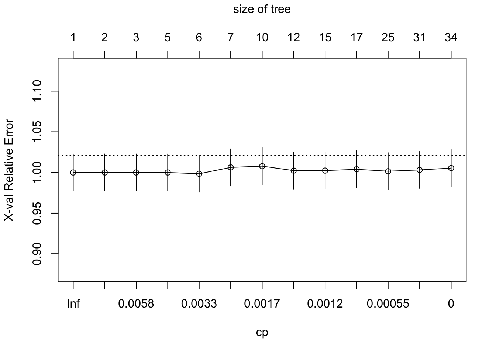

Chapter 5 [Model 2]
For my second model, I decided to try removing all rows with passenger counts that are NA. Miraculously, all NAs in the entire dataset disappeared! I will be using this set going forward.
Now, I want to split into test and train:
## Call:
## rpart(formula = tip ~ passenger_count + VendorID + RatecodeID +
## dropoff_borough + season + high_fare, data = train_dat, method = "class",
## control = rpart.control(cp = 0))
## n= 3781
##
## CP nsplit rel error xerror xstd
## 1 0.0132812500 0 1.0000000 1.0000000 0.02273257
## 2 0.0062500000 1 0.9867188 1.0000000 0.02273257
## 3 0.0054687500 2 0.9804688 1.0000000 0.02273257
## 4 0.0046875000 4 0.9695313 1.0000000 0.02273257
## 5 0.0023437500 5 0.9648438 0.9984375 0.02272388
## 6 0.0018229167 6 0.9625000 1.0062500 0.02276700
## 7 0.0015625000 9 0.9570312 1.0078125 0.02277553
## 8 0.0013020833 11 0.9539063 1.0023438 0.02274554
## 9 0.0011718750 14 0.9500000 1.0023438 0.02274554
## 10 0.0007812500 16 0.9476563 1.0039062 0.02275415
## 11 0.0003906250 24 0.9414062 1.0015625 0.02274122
## 12 0.0002604167 30 0.9390625 1.0031250 0.02274985
## 13 0.0000000000 33 0.9382813 1.0054688 0.02276272
##
## Variable importance
## dropoff_borough RatecodeID season passenger_count high_fare
## 43 19 16 11 7
## VendorID
## 4
##
## Node number 1: 3781 observations, complexity param=0.01328125
## predicted class=1 expected loss=0.3385348 P(node) =1
## class counts: 1280 2501
## probabilities: 0.339 0.661
## left son=2 (235 obs) right son=3 (3546 obs)
## Primary splits:
## dropoff_borough splits as LRLRLL, improve=19.574710, (0 missing)
## high_fare < 0.5 to the right, improve=11.362510, (0 missing)
## RatecodeID < 2.5 to the right, improve= 5.856027, (0 missing)
## passenger_count < 0.5 to the right, improve= 1.008938, (0 missing)
## VendorID < 1.5 to the left, improve= 0.334281, (0 missing)
## Surrogate splits:
## RatecodeID < 2.5 to the right, agree=0.94, adj=0.03, (0 split)
##
## Node number 2: 235 observations, complexity param=0.00546875
## predicted class=0 expected loss=0.4638298 P(node) =0.06215287
## class counts: 126 109
## probabilities: 0.536 0.464
## left son=4 (32 obs) right son=5 (203 obs)
## Primary splits:
## dropoff_borough splits as L-R-RR, improve=7.0091830, (0 missing)
## RatecodeID < 1.5 to the left, improve=3.6313050, (0 missing)
## high_fare < 0.5 to the left, improve=1.3639840, (0 missing)
## season splits as RLRR, improve=1.0282250, (0 missing)
## passenger_count < 4.5 to the left, improve=0.6321611, (0 missing)
##
## Node number 3: 3546 observations, complexity param=0.00625
## predicted class=1 expected loss=0.3254371 P(node) =0.9378471
## class counts: 1154 2392
## probabilities: 0.325 0.675
## left son=6 (10 obs) right son=7 (3536 obs)
## Primary splits:
## RatecodeID < 2.5 to the right, improve=6.6211220, (0 missing)
## high_fare < 0.5 to the right, improve=6.0724450, (0 missing)
## dropoff_borough splits as -L-R--, improve=1.8593150, (0 missing)
## passenger_count < 0.5 to the right, improve=1.2191900, (0 missing)
## VendorID < 1.5 to the left, improve=0.2611971, (0 missing)
##
## Node number 4: 32 observations, complexity param=0.00078125
## predicted class=0 expected loss=0.15625 P(node) =0.008463369
## class counts: 27 5
## probabilities: 0.844 0.156
## left son=8 (25 obs) right son=9 (7 obs)
## Primary splits:
## season splits as RLLL, improve=3.088929000, (0 missing)
## high_fare < 0.5 to the left, improve=0.710227300, (0 missing)
## VendorID < 1.5 to the left, improve=0.008928571, (0 missing)
##
## Node number 5: 203 observations, complexity param=0.00546875
## predicted class=1 expected loss=0.4876847 P(node) =0.0536895
## class counts: 99 104
## probabilities: 0.488 0.512
## left son=10 (159 obs) right son=11 (44 obs)
## Primary splits:
## RatecodeID < 1.5 to the left, improve=2.4204130, (0 missing)
## high_fare < 0.5 to the left, improve=1.0279060, (0 missing)
## dropoff_borough splits as --R-RL, improve=0.9725392, (0 missing)
## passenger_count < 2.5 to the left, improve=0.7593679, (0 missing)
## season splits as LLRL, improve=0.4864676, (0 missing)
## Surrogate splits:
## dropoff_borough splits as --R-LL, agree=0.803, adj=0.091, (0 split)
##
## Node number 6: 10 observations
## predicted class=0 expected loss=0.1 P(node) =0.002644803
## class counts: 9 1
## probabilities: 0.900 0.100
##
## Node number 7: 3536 observations, complexity param=0.001822917
## predicted class=1 expected loss=0.3238122 P(node) =0.9352023
## class counts: 1145 2391
## probabilities: 0.324 0.676
## left son=14 (395 obs) right son=15 (3141 obs)
## Primary splits:
## high_fare < 0.5 to the right, improve=5.1622860, (0 missing)
## dropoff_borough splits as -L-R--, improve=1.7123350, (0 missing)
## RatecodeID < 1.5 to the right, improve=1.6748600, (0 missing)
## passenger_count < 0.5 to the right, improve=1.1749510, (0 missing)
## VendorID < 1.5 to the left, improve=0.3417962, (0 missing)
## Surrogate splits:
## RatecodeID < 1.5 to the right, agree=0.909, adj=0.182, (0 split)
## dropoff_borough splits as -L-R--, agree=0.906, adj=0.157, (0 split)
##
## Node number 8: 25 observations
## predicted class=0 expected loss=0.04 P(node) =0.006612007
## class counts: 24 1
## probabilities: 0.960 0.040
##
## Node number 9: 7 observations
## predicted class=1 expected loss=0.4285714 P(node) =0.001851362
## class counts: 3 4
## probabilities: 0.429 0.571
##
## Node number 10: 159 observations, complexity param=0.0046875
## predicted class=0 expected loss=0.4716981 P(node) =0.04205237
## class counts: 84 75
## probabilities: 0.528 0.472
## left son=20 (105 obs) right son=21 (54 obs)
## Primary splits:
## season splits as LLRL, improve=1.1500450, (0 missing)
## passenger_count < 2.5 to the left, improve=0.7890182, (0 missing)
## high_fare < 0.5 to the left, improve=0.3157056, (0 missing)
## VendorID < 1.5 to the right, improve=0.2180499, (0 missing)
## dropoff_borough splits as ----RL, improve=0.1367495, (0 missing)
##
## Node number 11: 44 observations, complexity param=0.00234375
## predicted class=1 expected loss=0.3409091 P(node) =0.01163713
## class counts: 15 29
## probabilities: 0.341 0.659
## left son=22 (13 obs) right son=23 (31 obs)
## Primary splits:
## dropoff_borough splits as --L-RL, improve=2.7801710, (0 missing)
## RatecodeID < 3.5 to the right, improve=1.4402210, (0 missing)
## passenger_count < 1.5 to the right, improve=0.6530692, (0 missing)
## VendorID < 1.5 to the left, improve=0.1893939, (0 missing)
## season splits as LRLR, improve=0.1213112, (0 missing)
## Surrogate splits:
## RatecodeID < 2.5 to the right, agree=0.886, adj=0.615, (0 split)
##
## Node number 14: 395 observations, complexity param=0.001822917
## predicted class=1 expected loss=0.4 P(node) =0.1044697
## class counts: 158 237
## probabilities: 0.400 0.600
## left son=28 (127 obs) right son=29 (268 obs)
## Primary splits:
## VendorID < 1.5 to the left, improve=2.41484300, (0 missing)
## dropoff_borough splits as -L-R--, improve=0.32276810, (0 missing)
## passenger_count < 1.5 to the left, improve=0.20724080, (0 missing)
## RatecodeID < 1.5 to the right, improve=0.16441350, (0 missing)
## season splits as LLRR, improve=0.09802594, (0 missing)
## Surrogate splits:
## passenger_count < 0.5 to the left, agree=0.709, adj=0.094, (0 split)
##
## Node number 15: 3141 observations, complexity param=0.000390625
## predicted class=1 expected loss=0.3142311 P(node) =0.8307326
## class counts: 987 2154
## probabilities: 0.314 0.686
## left son=30 (3077 obs) right son=31 (64 obs)
## Primary splits:
## passenger_count < 0.5 to the right, improve=1.6129710000, (0 missing)
## season splits as RLLR, improve=0.1043094000, (0 missing)
## VendorID < 1.5 to the left, improve=0.0012775340, (0 missing)
## dropoff_borough splits as -R-L--, improve=0.0001937715, (0 missing)
##
## Node number 20: 105 observations, complexity param=0.0015625
## predicted class=0 expected loss=0.4285714 P(node) =0.02777043
## class counts: 60 45
## probabilities: 0.571 0.429
## left son=40 (12 obs) right son=41 (93 obs)
## Primary splits:
## dropoff_borough splits as ----RL, improve=0.86405530, (0 missing)
## passenger_count < 4 to the left, improve=0.66826220, (0 missing)
## high_fare < 0.5 to the left, improve=0.30612240, (0 missing)
## VendorID < 1.5 to the right, improve=0.10901660, (0 missing)
## season splits as LR-R, improve=0.02506266, (0 missing)
##
## Node number 21: 54 observations, complexity param=0.00078125
## predicted class=1 expected loss=0.4444444 P(node) =0.01428194
## class counts: 24 30
## probabilities: 0.444 0.556
## left son=42 (40 obs) right son=43 (14 obs)
## Primary splits:
## VendorID < 1.5 to the right, improve=0.288095200, (0 missing)
## passenger_count < 2.5 to the left, improve=0.090579710, (0 missing)
## high_fare < 0.5 to the left, improve=0.007575758, (0 missing)
##
## Node number 22: 13 observations
## predicted class=0 expected loss=0.3846154 P(node) =0.003438244
## class counts: 8 5
## probabilities: 0.615 0.385
##
## Node number 23: 31 observations
## predicted class=1 expected loss=0.2258065 P(node) =0.008198889
## class counts: 7 24
## probabilities: 0.226 0.774
##
## Node number 28: 127 observations, complexity param=0.001822917
## predicted class=1 expected loss=0.480315 P(node) =0.033589
## class counts: 61 66
## probabilities: 0.480 0.520
## left son=56 (93 obs) right son=57 (34 obs)
## Primary splits:
## season splits as LLLR, improve=2.28266300, (0 missing)
## passenger_count < 2.5 to the right, improve=0.58652780, (0 missing)
## RatecodeID < 1.5 to the right, improve=0.09519565, (0 missing)
## dropoff_borough splits as -R-L--, improve=0.05188536, (0 missing)
##
## Node number 29: 268 observations, complexity param=0.00078125
## predicted class=1 expected loss=0.3619403 P(node) =0.07088072
## class counts: 97 171
## probabilities: 0.362 0.638
## left son=58 (204 obs) right son=59 (64 obs)
## Primary splits:
## passenger_count < 1.5 to the left, improve=1.0948570, (0 missing)
## dropoff_borough splits as -L-R--, improve=0.5776783, (0 missing)
## season splits as RRRL, improve=0.4422420, (0 missing)
## RatecodeID < 1.5 to the right, improve=0.1150179, (0 missing)
##
## Node number 30: 3077 observations, complexity param=0.000390625
## predicted class=1 expected loss=0.3165421 P(node) =0.8138059
## class counts: 974 2103
## probabilities: 0.317 0.683
## left son=60 (784 obs) right son=61 (2293 obs)
## Primary splits:
## passenger_count < 1.5 to the right, improve=1.213904000, (0 missing)
## VendorID < 1.5 to the left, improve=0.102197800, (0 missing)
## season splits as RLLR, improve=0.101199700, (0 missing)
## dropoff_borough splits as -L-R--, improve=0.002283788, (0 missing)
##
## Node number 31: 64 observations
## predicted class=1 expected loss=0.203125 P(node) =0.01692674
## class counts: 13 51
## probabilities: 0.203 0.797
##
## Node number 40: 12 observations
## predicted class=0 expected loss=0.25 P(node) =0.003173764
## class counts: 9 3
## probabilities: 0.750 0.250
##
## Node number 41: 93 observations, complexity param=0.0015625
## predicted class=0 expected loss=0.4516129 P(node) =0.02459667
## class counts: 51 42
## probabilities: 0.548 0.452
## left son=82 (85 obs) right son=83 (8 obs)
## Primary splits:
## passenger_count < 2.5 to the left, improve=1.5586340, (0 missing)
## high_fare < 0.5 to the left, improve=0.2297583, (0 missing)
## VendorID < 1.5 to the right, improve=0.2073733, (0 missing)
## season splits as RR-L, improve=0.1205506, (0 missing)
##
## Node number 42: 40 observations, complexity param=0.00078125
## predicted class=1 expected loss=0.475 P(node) =0.01057921
## class counts: 19 21
## probabilities: 0.475 0.525
## left son=84 (16 obs) right son=85 (24 obs)
## Primary splits:
## high_fare < 0.5 to the left, improve=0.4083333, (0 missing)
## passenger_count < 1.5 to the right, improve=0.1506270, (0 missing)
## Surrogate splits:
## dropoff_borough splits as ----RL, agree=0.675, adj=0.188, (0 split)
## passenger_count < 3.5 to the right, agree=0.625, adj=0.063, (0 split)
##
## Node number 43: 14 observations
## predicted class=1 expected loss=0.3571429 P(node) =0.003702724
## class counts: 5 9
## probabilities: 0.357 0.643
##
## Node number 56: 93 observations, complexity param=0.001302083
## predicted class=0 expected loss=0.4623656 P(node) =0.02459667
## class counts: 50 43
## probabilities: 0.538 0.462
## left son=112 (9 obs) right son=113 (84 obs)
## Primary splits:
## passenger_count < 2.5 to the right, improve=1.1492580, (0 missing)
## dropoff_borough splits as -R-L--, improve=0.4179598, (0 missing)
## RatecodeID < 1.5 to the right, improve=0.3649497, (0 missing)
## season splits as LRL-, improve=0.2154411, (0 missing)
##
## Node number 57: 34 observations
## predicted class=1 expected loss=0.3235294 P(node) =0.00899233
## class counts: 11 23
## probabilities: 0.324 0.676
##
## Node number 58: 204 observations, complexity param=0.00078125
## predicted class=1 expected loss=0.3872549 P(node) =0.05395398
## class counts: 79 125
## probabilities: 0.387 0.613
## left son=116 (132 obs) right son=117 (72 obs)
## Primary splits:
## season splits as LLRL, improve=0.6470588, (0 missing)
## RatecodeID < 1.5 to the right, improve=0.5666667, (0 missing)
## dropoff_borough splits as -L-R--, improve=0.3169306, (0 missing)
##
## Node number 59: 64 observations, complexity param=0.0002604167
## predicted class=1 expected loss=0.28125 P(node) =0.01692674
## class counts: 18 46
## probabilities: 0.281 0.719
## left son=118 (35 obs) right son=119 (29 obs)
## Primary splits:
## season splits as RLLL, improve=1.25628100, (0 missing)
## passenger_count < 2.5 to the left, improve=0.27032160, (0 missing)
## dropoff_borough splits as -L-R--, improve=0.18031730, (0 missing)
## RatecodeID < 1.5 to the left, improve=0.09777847, (0 missing)
## Surrogate splits:
## passenger_count < 5.5 to the left, agree=0.562, adj=0.034, (0 split)
##
## Node number 60: 784 observations, complexity param=0.000390625
## predicted class=1 expected loss=0.3405612 P(node) =0.2073526
## class counts: 267 517
## probabilities: 0.341 0.659
## left son=120 (632 obs) right son=121 (152 obs)
## Primary splits:
## season splits as LLLR, improve=0.7470683, (0 missing)
## VendorID < 1.5 to the right, improve=0.1919206, (0 missing)
## dropoff_borough splits as -R-L--, improve=0.1325742, (0 missing)
## passenger_count < 3.5 to the right, improve=0.1282307, (0 missing)
##
## Node number 61: 2293 observations
## predicted class=1 expected loss=0.3083297 P(node) =0.6064533
## class counts: 707 1586
## probabilities: 0.308 0.692
##
## Node number 82: 85 observations, complexity param=0.001171875
## predicted class=0 expected loss=0.4235294 P(node) =0.02248083
## class counts: 49 36
## probabilities: 0.576 0.424
## left son=164 (55 obs) right son=165 (30 obs)
## Primary splits:
## VendorID < 1.5 to the right, improve=0.5422460000, (0 missing)
## high_fare < 0.5 to the left, improve=0.1498733000, (0 missing)
## season splits as RR-L, improve=0.0392156900, (0 missing)
## passenger_count < 1.5 to the left, improve=0.0008521719, (0 missing)
## Surrogate splits:
## passenger_count < 0.5 to the right, agree=0.706, adj=0.167, (0 split)
##
## Node number 83: 8 observations
## predicted class=1 expected loss=0.25 P(node) =0.002115842
## class counts: 2 6
## probabilities: 0.250 0.750
##
## Node number 84: 16 observations
## predicted class=0 expected loss=0.4375 P(node) =0.004231685
## class counts: 9 7
## probabilities: 0.562 0.438
##
## Node number 85: 24 observations
## predicted class=1 expected loss=0.4166667 P(node) =0.006347527
## class counts: 10 14
## probabilities: 0.417 0.583
##
## Node number 112: 9 observations
## predicted class=0 expected loss=0.2222222 P(node) =0.002380323
## class counts: 7 2
## probabilities: 0.778 0.222
##
## Node number 113: 84 observations, complexity param=0.001302083
## predicted class=0 expected loss=0.4880952 P(node) =0.02221634
## class counts: 43 41
## probabilities: 0.512 0.488
## left son=226 (64 obs) right son=227 (20 obs)
## Primary splits:
## season splits as LRL-, improve=0.2011905, (0 missing)
## RatecodeID < 1.5 to the right, improve=0.1428571, (0 missing)
## passenger_count < 0.5 to the right, improve=0.1060606, (0 missing)
## dropoff_borough splits as -R-L--, improve=0.0717001, (0 missing)
##
## Node number 116: 132 observations, complexity param=0.00078125
## predicted class=1 expected loss=0.4166667 P(node) =0.0349114
## class counts: 55 77
## probabilities: 0.417 0.583
## left son=232 (26 obs) right son=233 (106 obs)
## Primary splits:
## dropoff_borough splits as -L-R--, improve=0.96057090, (0 missing)
## season splits as LR-L, improve=0.10784310, (0 missing)
## RatecodeID < 1.5 to the right, improve=0.03358255, (0 missing)
##
## Node number 117: 72 observations, complexity param=0.00078125
## predicted class=1 expected loss=0.3333333 P(node) =0.01904258
## class counts: 24 48
## probabilities: 0.333 0.667
## left son=234 (9 obs) right son=235 (63 obs)
## Primary splits:
## RatecodeID < 1.5 to the right, improve=1.01587300, (0 missing)
## dropoff_borough splits as -R-L--, improve=0.01454545, (0 missing)
##
## Node number 118: 35 observations, complexity param=0.0002604167
## predicted class=1 expected loss=0.3714286 P(node) =0.00925681
## class counts: 13 22
## probabilities: 0.371 0.629
## left son=236 (26 obs) right son=237 (9 obs)
## Primary splits:
## RatecodeID < 1.5 to the left, improve=1.6420020, (0 missing)
## dropoff_borough splits as -L-R--, improve=0.7000000, (0 missing)
## passenger_count < 2.5 to the left, improve=0.3125541, (0 missing)
## season splits as -LRL, improve=0.1075630, (0 missing)
##
## Node number 119: 29 observations
## predicted class=1 expected loss=0.1724138 P(node) =0.007669929
## class counts: 5 24
## probabilities: 0.172 0.828
##
## Node number 120: 632 observations, complexity param=0.000390625
## predicted class=1 expected loss=0.3512658 P(node) =0.1671515
## class counts: 222 410
## probabilities: 0.351 0.649
## left son=240 (463 obs) right son=241 (169 obs)
## Primary splits:
## VendorID < 1.5 to the right, improve=0.18279810, (0 missing)
## passenger_count < 4.5 to the right, improve=0.03129019, (0 missing)
## season splits as RLL-, improve=0.02133136, (0 missing)
##
## Node number 121: 152 observations
## predicted class=1 expected loss=0.2960526 P(node) =0.04020101
## class counts: 45 107
## probabilities: 0.296 0.704
##
## Node number 164: 55 observations
## predicted class=0 expected loss=0.3818182 P(node) =0.01454642
## class counts: 34 21
## probabilities: 0.618 0.382
##
## Node number 165: 30 observations, complexity param=0.001171875
## predicted class=0 expected loss=0.5 P(node) =0.007934409
## class counts: 15 15
## probabilities: 0.500 0.500
## left son=330 (7 obs) right son=331 (23 obs)
## Primary splits:
## season splits as RR-L, improve=0.8385093, (0 missing)
## high_fare < 0.5 to the left, improve=0.0678733, (0 missing)
## Surrogate splits:
## passenger_count < 1.5 to the right, agree=0.8, adj=0.143, (0 split)
##
## Node number 226: 64 observations, complexity param=0.001302083
## predicted class=0 expected loss=0.46875 P(node) =0.01692674
## class counts: 34 30
## probabilities: 0.531 0.469
## left son=452 (47 obs) right son=453 (17 obs)
## Primary splits:
## dropoff_borough splits as -R-L--, improve=0.6609825000, (0 missing)
## RatecodeID < 1.5 to the right, improve=0.0053602060, (0 missing)
## season splits as R-L-, improve=0.0004901961, (0 missing)
## passenger_count < 1.5 to the left, improve=0.0001564456, (0 missing)
##
## Node number 227: 20 observations
## predicted class=1 expected loss=0.45 P(node) =0.005289606
## class counts: 9 11
## probabilities: 0.450 0.550
##
## Node number 232: 26 observations, complexity param=0.00078125
## predicted class=0 expected loss=0.4615385 P(node) =0.006876488
## class counts: 14 12
## probabilities: 0.538 0.462
## left son=464 (14 obs) right son=465 (12 obs)
## Primary splits:
## season splits as RL-L, improve=0.6611722, (0 missing)
##
## Node number 233: 106 observations
## predicted class=1 expected loss=0.3867925 P(node) =0.02803491
## class counts: 41 65
## probabilities: 0.387 0.613
##
## Node number 234: 9 observations
## predicted class=0 expected loss=0.4444444 P(node) =0.002380323
## class counts: 5 4
## probabilities: 0.556 0.444
##
## Node number 235: 63 observations
## predicted class=1 expected loss=0.3015873 P(node) =0.01666226
## class counts: 19 44
## probabilities: 0.302 0.698
##
## Node number 236: 26 observations, complexity param=0.0002604167
## predicted class=1 expected loss=0.4615385 P(node) =0.006876488
## class counts: 12 14
## probabilities: 0.462 0.538
## left son=472 (7 obs) right son=473 (19 obs)
## Primary splits:
## dropoff_borough splits as -L-R--, improve=0.23134760, (0 missing)
## season splits as -LRL, improve=0.08974359, (0 missing)
## passenger_count < 2.5 to the left, improve=0.02082128, (0 missing)
## Surrogate splits:
## season splits as -RRL, agree=0.769, adj=0.143, (0 split)
##
## Node number 237: 9 observations
## predicted class=1 expected loss=0.1111111 P(node) =0.002380323
## class counts: 1 8
## probabilities: 0.111 0.889
##
## Node number 240: 463 observations
## predicted class=1 expected loss=0.3585313 P(node) =0.1224544
## class counts: 166 297
## probabilities: 0.359 0.641
##
## Node number 241: 169 observations, complexity param=0.000390625
## predicted class=1 expected loss=0.3313609 P(node) =0.04469717
## class counts: 56 113
## probabilities: 0.331 0.669
## left son=482 (112 obs) right son=483 (57 obs)
## Primary splits:
## season splits as LLR-, improve=1.2647670, (0 missing)
## passenger_count < 3.5 to the right, improve=0.8682191, (0 missing)
## Surrogate splits:
## dropoff_borough splits as -R-L--, agree=0.675, adj=0.035, (0 split)
##
## Node number 330: 7 observations
## predicted class=0 expected loss=0.2857143 P(node) =0.001851362
## class counts: 5 2
## probabilities: 0.714 0.286
##
## Node number 331: 23 observations
## predicted class=1 expected loss=0.4347826 P(node) =0.006083047
## class counts: 10 13
## probabilities: 0.435 0.565
##
## Node number 452: 47 observations
## predicted class=0 expected loss=0.4255319 P(node) =0.01243057
## class counts: 27 20
## probabilities: 0.574 0.426
##
## Node number 453: 17 observations
## predicted class=1 expected loss=0.4117647 P(node) =0.004496165
## class counts: 7 10
## probabilities: 0.412 0.588
##
## Node number 464: 14 observations
## predicted class=0 expected loss=0.3571429 P(node) =0.003702724
## class counts: 9 5
## probabilities: 0.643 0.357
##
## Node number 465: 12 observations
## predicted class=1 expected loss=0.4166667 P(node) =0.003173764
## class counts: 5 7
## probabilities: 0.417 0.583
##
## Node number 472: 7 observations
## predicted class=0 expected loss=0.4285714 P(node) =0.001851362
## class counts: 4 3
## probabilities: 0.571 0.429
##
## Node number 473: 19 observations
## predicted class=1 expected loss=0.4210526 P(node) =0.005025126
## class counts: 8 11
## probabilities: 0.421 0.579
##
## Node number 482: 112 observations, complexity param=0.000390625
## predicted class=1 expected loss=0.375 P(node) =0.02962179
## class counts: 42 70
## probabilities: 0.375 0.625
## left son=964 (9 obs) right son=965 (103 obs)
## Primary splits:
## passenger_count < 3.5 to the right, improve=1.665049, (0 missing)
##
## Node number 483: 57 observations
## predicted class=1 expected loss=0.245614 P(node) =0.01507538
## class counts: 14 43
## probabilities: 0.246 0.754
##
## Node number 964: 9 observations
## predicted class=0 expected loss=0.3333333 P(node) =0.002380323
## class counts: 6 3
## probabilities: 0.667 0.333
##
## Node number 965: 103 observations
## predicted class=1 expected loss=0.3495146 P(node) =0.02724147
## class counts: 36 67
## probabilities: 0.350 0.650